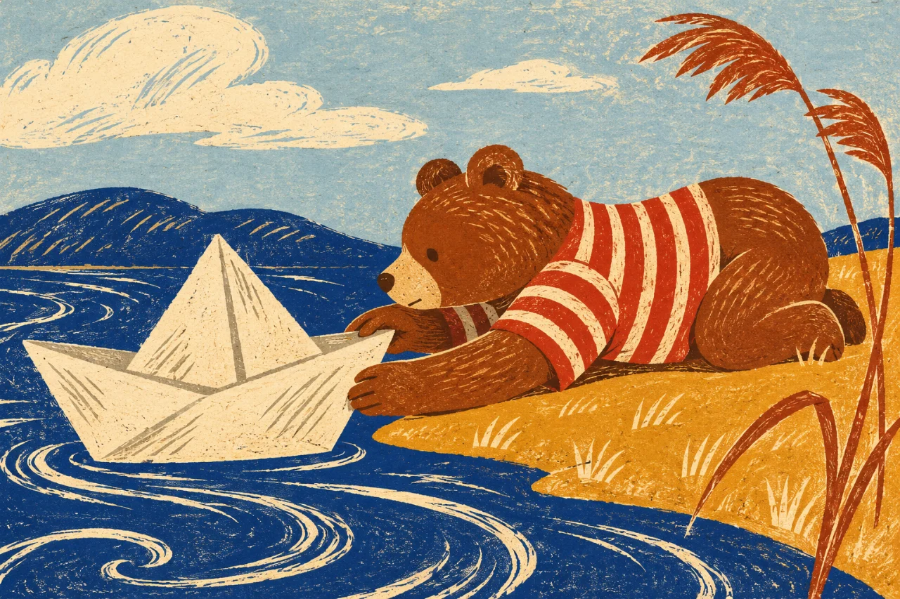

<!doctype html><html lang="zh-CN"><meta charset="utf-8"><meta name="viewport" content="width=device-width,initial-scale=1">
<title>晚安邮局 · 绘本版交互草图</title>
<style>
*{box-sizing:border-box}body{margin:0;background:#faf4e6;color:#202d41;font:17px/1.65 system-ui,sans-serif}main,header{max-width:1080px;margin:auto;padding:22px 5vw}header{border-bottom:2px solid;display:flex;justify-content:space-between;align-items:center;gap:16px;flex-wrap:wrap}strong,h1,h2{font-family:"Songti SC",serif}strong{font-size:25px}nav{display:flex;gap:12px;flex-wrap:wrap}a{color:inherit;text-underline-offset:6px}section{display:none}section:target{display:block}body:not(:has(section:target)) #home{display:block}.spread{display:grid;grid-template-columns:1fr 1.1fr;align-items:center;gap:30px;padding:36px 0;border-bottom:2px solid}h1{font-size:clamp(42px,7vw,82px);line-height:1.14;margin:10px 0}em{color:#ad402d;font-style:normal}img{width:100%;display:block}figure{margin:0;background:#ecc35d;padding:12px;transform:rotate(2deg);box-shadow:6px 6px #27374b}figcaption{padding:5px}.listen{display:inline-block;background:#ac402c;color:white;padding:9px 18px;text-decoration:none;border-radius:6px;box-shadow:2px 3px #27374b}#player .spread{padding:28px;background:#fff9ea;color:#243348;border-block:3px double}.record{padding:12%;border-radius:50%;background:repeating-radial-gradient(#253448 0 4px,#3f5061 5px 6px);aspect-ratio:1;display:grid;place-items:center}.record img{border-radius:50%;aspect-ratio:1;object-fit:cover;width:70%}.line{border-bottom:1px dashed #877b65;padding:16px 0}@media(max-width:650px){.spread{grid-template-columns:1fr}figure{max-width:95%}}
.books{display:grid;grid-template-columns:repeat(3,minmax(0,1fr));gap:14px}.books img{aspect-ratio:1.6;object-fit:cover}.books a{font-weight:bold}.record img{object-fit:cover}audio{max-width:100%}@media(max-width:450px){.books{grid-template-columns:1fr 1fr}}
</style>
<header><strong>晚安邮局</strong><nav><a href="#home">访客首页</a><a href="#shelf">家庭书架</a><a href="#player">播放器</a></nav></header><main>
<section id="home"><div class="spread"><div><h1>睡前，<br><em>听个故事。</em></h1><p>选一篇放给孩子听，也可以把孩子今天的奇思妙想写成下一篇。</p><a class="listen" href="#player" data-story="fox">听《月亮邮差》</a></div><figure><figcaption>月亮邮差</figcaption></figure></div><h2>挑一本听</h2><div class="books"><a href="#player" data-story="fox">月亮邮差</a><a href="#player" data-story="rabbit">星星花园</a><a href="#player" data-story="bear">小熊的纸船</a></div></section>
<section id="shelf"><h1>小米的书架</h1><div class="line">接着听　<a href="#player" data-story="fox">月亮邮差</a></div><h2>全部故事</h2><p>我喜欢的　·　家庭原创</p><a class="listen" href="#player" data-story="fox">翻开一本</a></section>
<section id="player"><div class="spread"><div class="record"></div><div><h1>月亮邮差</h1><p>森林奇遇 · 普通话朗读</p><audio controls src="../web/assets/fox.m4a"></audio><p><a href="#shelf">回书架</a></p></div></div><details class="line"><summary>睡眠定时</summary><label>多少分钟后暂停 <input type="number" min="1" placeholder="15"></label></details><details class="line"><summary>读故事原文</summary><p>森林里的最后一盏灯还亮着。</p></details></section></main>
<script>
const player=document.querySelector('#player'), audio=player.querySelector('audio');
const titles={fox:['月亮邮差','森林奇遇'],rabbit:['星星花园','晚安童话'],bear:['小熊的纸船','温暖友谊']};
document.addEventListener('click',event=>{
  const story=event.target.closest('[data-story]')?.dataset.story;
  if(!story)return;
  const [title,theme]=titles[story];
  player.querySelector('h1').textContent=title;
  player.querySelector('p').textContent=theme+' · 普通话朗读';
  const cover=player.querySelector('img');cover.src='../web/assets/'+story+'-print.webp';cover.alt=title+'封面';
  audio.src='../web/assets/'+story+'.m4a';
});
addEventListener('hashchange',()=>{if(location.hash!=='#player')audio.pause()});
</script></html>
